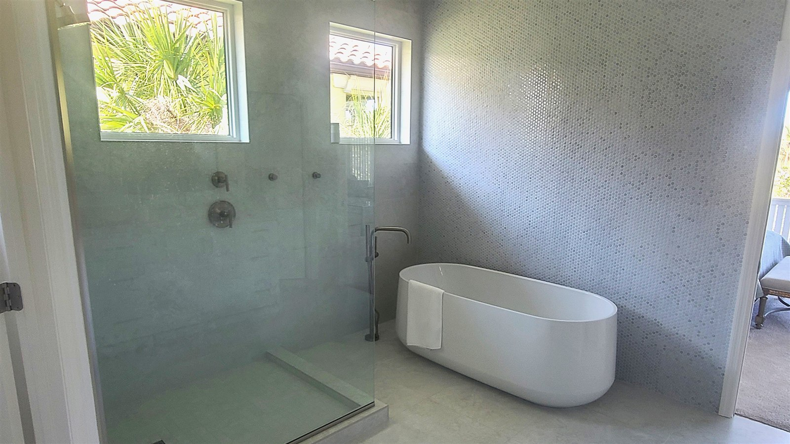

How to Find a Good Tile Contractor in Hattiesburg
Tile work is one of the easiest trades to get wrong in a way that doesn't show up until months later. Here's what actually separates a solid tile installer from someone who'll leave you with a callback.
Tile is deceptively easy to install badly and still have it look fine for the first few weeks. Lippage, poor waterproofing, and bad substrate prep don't usually show up on day one — they show up as cracked grout, a leaking shower, or a hollow-sounding floor a year or two later. That makes hiring the right person up front more important than it is for a lot of other home projects. Here's what to actually check.
Ask to See Real Photos of Past Work
Not a stock photo gallery — actual project photos, ideally with some idea of when and where the work was done. Pay attention to grout lines (straight and consistent), tile spacing (even), and whether corners and transitions look clean. If a contractor is cagey about showing you real work, that's worth noting.
Ask Specifically About Waterproofing
This is the single best question to separate a real tile professional from someone who's "done some tile before." Ask what waterproofing system they use in showers and wet areas, and listen for a specific answer — a membrane system, a particular product, a process. A vague answer here is the biggest red flag on this whole list, because waterproofing failures are the most expensive mistakes to fix after the fact.
Get a Written Quote, Not Just a Number
A written quote should spell out what's included: materials, labor, substrate prep, demo and disposal of old flooring, and what happens if the crew finds a problem (like subfloor damage) once work starts. A verbal ballpark isn't the same thing, and it's much harder to hold anyone to it later.
Ask Who's Actually Doing the Work
Some general contractors and remodeling companies sub out tile work to whoever's available. There's nothing inherently wrong with subcontracting, but you deserve to know who's actually going to be in your house doing the tile, not just who you signed a contract with.
Check Reviews the Right Way
Look past the star rating and read a handful of the actual written reviews, especially any critical ones. How a business responds to a bad review often tells you more than the rating itself. Check Google and Facebook, and if a contractor has a real, physical local presence, cross-reference that against what they've told you.
Watch for These Red Flags
- Pressure to pay the full amount upfront before any work has started
- No willingness to put the scope of work in writing
- Can't or won't explain how they handle waterproofing in wet areas
- No fixed start date or a start date that keeps sliding before work even begins
- Reluctant to share references or examples of past work
The best question you can ask any tile contractor is the one about waterproofing. How they answer it tells you almost everything else you need to know.
Common Questions
Should I get more than one quote before hiring a tile contractor?
It's a reasonable step, especially for a larger job, but the cheapest quote isn't automatically the best one. Weigh quotes against what each contractor is actually including — substrate prep, waterproofing, and material handling can vary a lot between two numbers that look similar on the surface.
What's a reasonable deposit for a tile installation job?
Practices vary, but be cautious of anyone asking for the full amount upfront before any work starts. A partial deposit tied to material costs is common and reasonable; the rest is typically due as work progresses or on completion.
Does it matter if a contractor specializes in tile versus doing it as one of many services?
It can. A general contractor may sub out tile work to someone else entirely, adding a layer between you and the person actually doing it. Asking directly who will be on-site doing the tile work is a fair question to ask upfront.
How We Handle the Questions Above
Ready to Talk Through Your Project?
Call us directly, or send over your project details and we'll get back to you promptly.